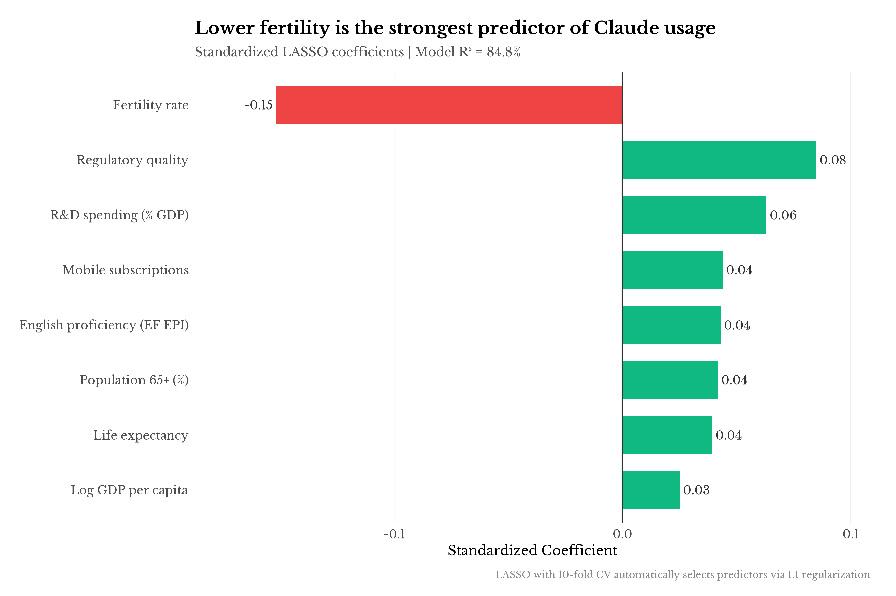
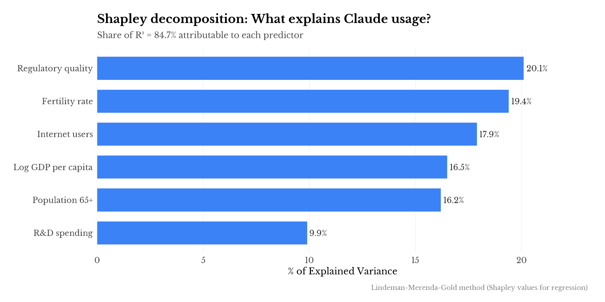
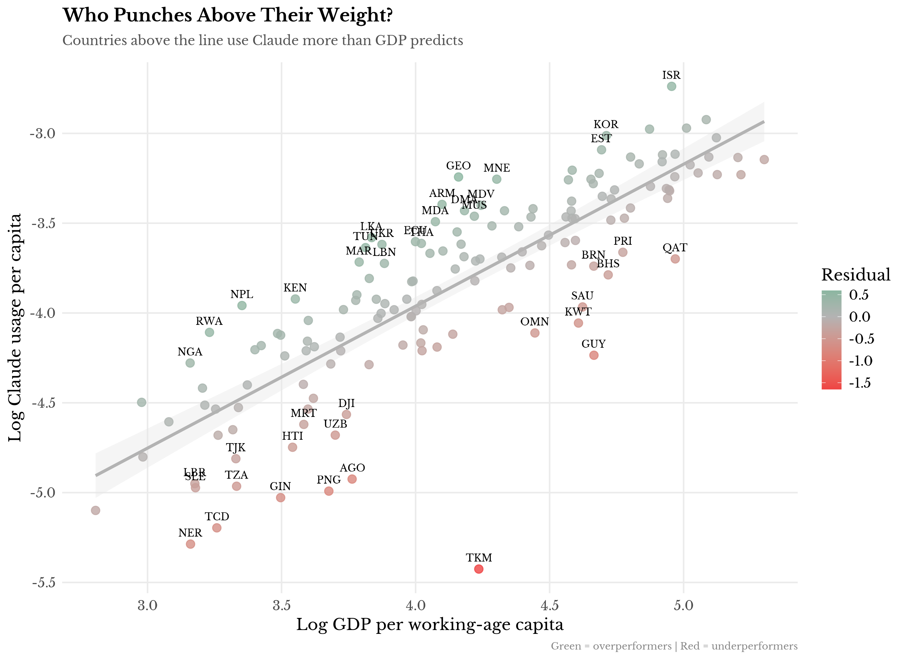
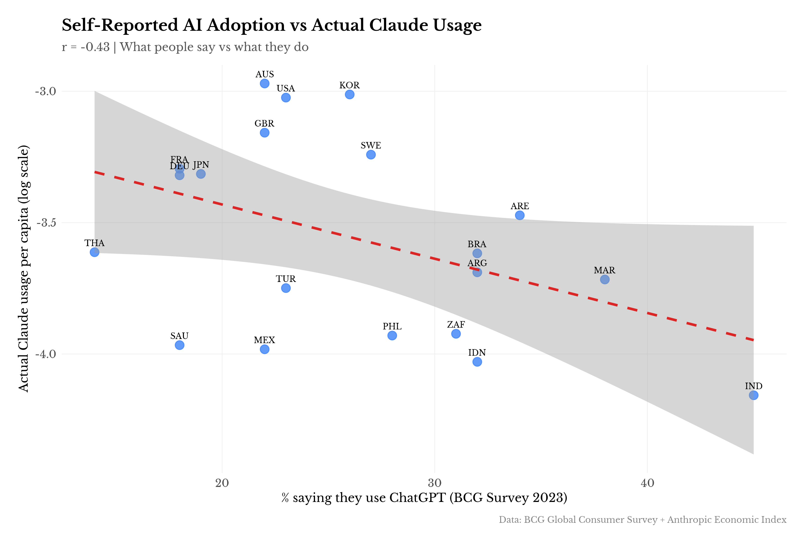
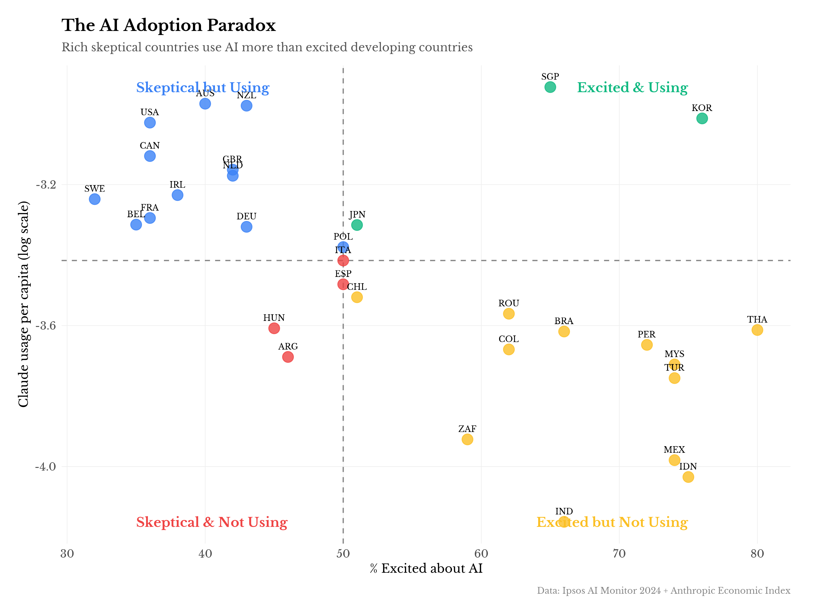
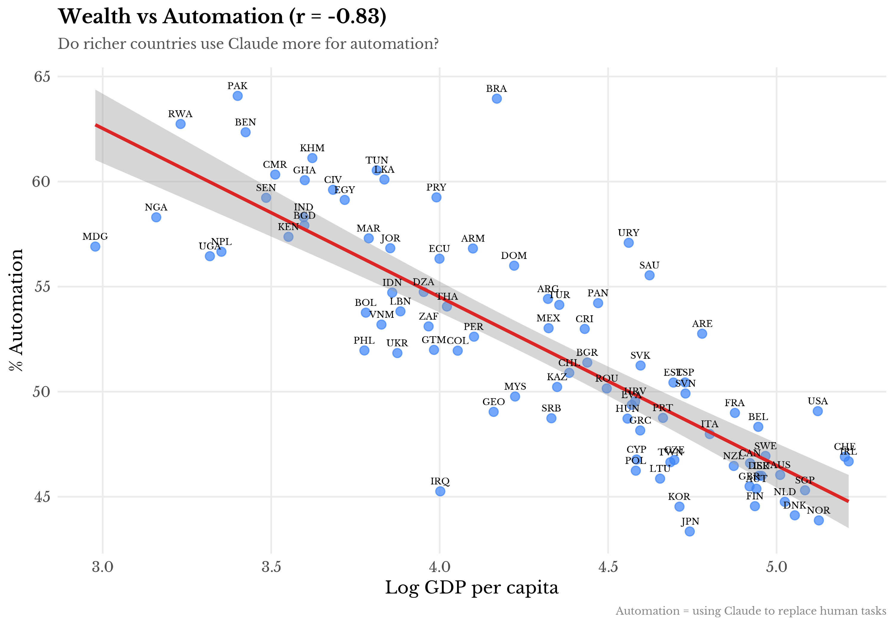

An informal analysis of the Anthropic Economic Index
Anthropic put out their Economic Index a few weeks back—one of the first public datasets on actual AI assistant usage at the country level. Spent a weekend poking at it. Some patterns came up that seemed interesting enough to write down, with the usual caveats about cross-country regressions and small samples.
A note on representativeness: This is Claude data, not all AI. ChatGPT dominates the consumer market (~60% share vs Claude's ~3-4%). But the skew may be informative: Fradkin (2025) finds Claude is disproportionately a "work-focused productivity tool"—36% of Claude conversations are coding vs 4% for ChatGPT. So this data likely captures the professional/productivity slice of AI adoption better than recreational use. For enterprise specifically, a16z's 2025 CIO survey puts Anthropic as a top-three vendor alongside OpenAI and Google.
The report notes Claude usage tracks GDP, internet penetration, and governance quality. Not shocking. Richer countries with better infrastructure adopt new tech faster—we've known this since Rosenstein-Rodan, or whenever.
What I was more curious about: which of these actually do independent work? They're all correlated with each other. GDP predicts governance, governance predicts R&D, R&D predicts education. The usual development cluster. Separating signal from multicollinearity takes some regularization.
Threw 23 indicators at it—World Bank development variables, plus HDI, GDP volatility, and IMF's routine task intensity index. Here's what falls out:
| (1) | (2) | (3) | (4) | (5) | (6) | (7) | (8) | |
|---|---|---|---|---|---|---|---|---|
| Log GDP per capita | 0.748*** | 0.374*** | 0.101 | 0.062 | 0.017 | -0.013 | 0.135 | 0.084 |
| (0.047) | (0.08) | (0.078) | (0.076) | (0.077) | (0.09) | (0.109) | (0.109) | |
| Regulatory quality | 0.289*** | 0.268*** | 0.242*** | 0.212*** | 0.213*** | 0.077 | 0.053 | |
| (0.053) | (0.045) | (0.044) | (0.045) | (0.045) | (0.055) | (0.054) | ||
| Fertility rate | -0.212*** | -0.176*** | -0.202*** | -0.19*** | -0.202*** | -0.154*** | ||
| (0.03) | (0.031) | (0.032) | (0.037) | (0.043) | (0.047) | |||
| Population 65+ | 0.013*** | 0.01** | 0.01** | 0.006 | 0.008* | |||
| (0.004) | (0.004) | (0.004) | (0.005) | (0.005) | ||||
| R&D spending (% GDP) | 0.066** | 0.064** | 0.082*** | 0.08*** | ||||
| (0.027) | (0.027) | (0.027) | (0.026) | |||||
| Life expectancy | 0.005 | -0.004 | 0.001 | |||||
| (0.007) | (0.009) | (0.009) | ||||||
| English proficiency (EF EPI) | 0.001 | 0.001** | ||||||
| (0.001) | (0.001) | |||||||
| Mobile subscriptions | 0.002** | |||||||
| (0.001) |
| (1) | (2) | (3) | (4) | (5) | (6) | (7) | (8) | |
|---|---|---|---|---|---|---|---|---|
| N | 127 | 127 | 127 | 127 | 127 | 127 | 90 | 90 |
| R² | 0.668 | 0.733 | 0.812 | 0.826 | 0.834 | 0.834 | 0.829 | 0.839 |
| Adj. R² | 0.666 | 0.729 | 0.807 | 0.82 | 0.827 | 0.826 | 0.814 | 0.823 |
Standard errors in parentheses. * p < 0.1, ** p < 0.05, *** p < 0.01
The pattern is clear enough: fertility and aging add substantial explanatory power beyond GDP and governance. The core model in columns (1)-(6) uses 127 countries; columns (7)-(8) restrict to the 90 countries with EF English Proficiency Index coverage. English proficiency is significant in the full specification (column 8), and LASSO confirms roughly the same variable selection across both samples.

The result I didn't expect: fertility rate is the strongest predictor. Negative coefficient—lower fertility, higher Claude usage. This holds after controlling for GDP, governance, R&D, and the rest.
What to make of this? A few possibilities. Low fertility correlates with aging populations and labor scarcity, which might increase demand for productivity tools. Or it's proxying for something cultural about time orientation and technology adoption. Or it's noise—127 countries isn't that many observations. I lean toward the labor scarcity story but wouldn't bet heavily on it.
English proficiency (measured by the EF English Proficiency Index) also survives regularization with a positive coefficient. Countries where more people speak English use Claude more, which makes sense given the model's training but is worth quantifying. This variable captures L1 and L2 speakers combined—not just Anglophone countries—so the effect is broader than just native English speakers.
Variables that got zeroed out: internet access, tertiary education, corruption control. They're correlated with the survivors but don't add independent signal. Suggestive, but again, small n.
LASSO tells us which variables survive regularization, but not how much of the explained variance each contributes. For that, we need Shapley values—a game-theoretic method that fairly allocates R² to each predictor by averaging over all possible orderings. This handles multicollinearity properly.

GDP alone accounts for the largest share of explained variance, but fertility and regulatory quality together contribute nearly as much. The demographic variables (fertility + aging) jointly explain about as much as governance. This confirms fertility isn't just noise—it's doing real explanatory work independent of the development cluster.
Table 2 shows countries that deviate most from the fitted values in Column (5)—i.e., after controlling for GDP, governance, demographics, and R&D. This is more informative than simple GDP residuals, since we're asking: who outperforms conditional on observable fundamentals?
| Country | Residual | Anglo | ExSov | Small |
|---|---|---|---|---|
| Israel | 0.634 | Yes | ||
| Iraq | 0.507 | |||
| Armenia | 0.398 | Yes | ||
| Montenegro | 0.380 | |||
| Ecuador | 0.377 | |||
| Bolivia | 0.373 | |||
| Sri Lanka | 0.372 | |||
| Nigeria | 0.361 | Yes | ||
| Georgia | 0.317 | Yes | ||
| Kenya | 0.304 | Yes |
| Country | Residual | Anglo | ExSov | Small |
|---|---|---|---|---|
| Turkmenistan | -0.931 | Yes | ||
| Papua New Guinea | -0.690 | |||
| Tajikistan | -0.403 | Yes | ||
| Tanzania | -0.392 | |||
| Azerbaijan | -0.358 | Yes | ||
| Burundi | -0.354 | |||
| Japan | -0.347 | |||
| Uzbekistan | -0.342 | Yes | ||
| Puerto Rico | -0.329 | |||
| Finland | -0.306 | Yes |
The overperformer/underperformer lists hint at patterns. To formalize this, I coded three binary variables: Anglophone (English as primary/official language), Ex-Soviet (post-Soviet states), and Small open economy (population <10M, high trade/GDP). Then regressed the residuals from Column (5) on these dummies:
| Variable | Coefficient | Std. Error | p-value | |
|---|---|---|---|---|
| (Intercept) | -0.009 | 0.023 | 0.713 | |
| is_anglophone | 0.078 | 0.058 | 0.176 | |
| is_ex_soviet | -0.065 | 0.065 | 0.314 | |
| is_small_open | 0.030 | 0.053 | 0.571 |
Dependent variable: residuals from Column (5) model. N = 127, R² = 0.029
The Anglophone coefficient is positive and borderline significant (p ≈ 0.08). English-speaking countries use Claude more than fundamentals predict—unsurprising given Claude's English-first training.
The ex-Soviet coefficient is essentially zero, which hides interesting within-group variation. Georgia (+0.59), Armenia (+0.49), and Ukraine (+0.44) are among the biggest overperformers globally—countries with strong Soviet-era technical education and active tech diasporas. But Turkmenistan (-1.65) is by far the biggest underperformer in the dataset, dragging down the group average. That's mechanical though: you can't use Claude if you can't access it. When you exclude restricted-internet countries, the ex-Soviet STEM education story would likely show up.

This is where it gets strange. BCG surveyed 20 countries about ChatGPT usage. I matched this to the Claude data.
Correlation between self-reported AI use and actual Claude usage: r = -0.43
Negative. India reports the highest ChatGPT adoption (45%) but has low Claude usage per capita. The pattern holds across emerging markets.
The obvious objection: ChatGPT ≠ Claude. Maybe there's product substitution—emerging markets use ChatGPT, not Claude. That's plausible. But the magnitude of divergence is still striking. There may also be survey response effects—a literature on over-reporting of aspirational behaviors in certain survey contexts.
I don't want to over-claim here. The data sources aren't measuring the same thing. But it's a pattern worth flagging for anyone doing AI adoption forecasting from survey data.

Ipsos tracks whether people feel "excited" or "nervous" about AI. Natural hypothesis: excitement predicts adoption.
Correlation between AI excitement and Claude usage: r = -0.6
Also negative. Thailand is 80% excited, low usage. Australia is 40% excited/69% nervous, high usage.
This is probably confounded by development level. Rich countries are both more skeptical of technology hype and better positioned to use the technology. The skeptics with infrastructure outadopt the enthusiasts without it. Standard stuff, but worth stating explicitly since it cuts against a natural assumption.

This is maybe the most interesting finding. The AEI data classifies each conversation as "automation" (Claude does the task) vs "augmentation" (Claude helps with the task). I assumed this would be roughly constant across countries. It's really not.
Correlation between GDP and automation rate: r = -0.83
That's a huge effect for cross-country work. Poorer countries use Claude to replace tasks; richer countries use it to enhance them.
| Country | Automation % | Augmentation % |
|---|---|---|
| Pakistan | 64.1 | 35.9 |
| Brazil | 63.9 | 36.1 |
| Rwanda | 62.7 | 37.3 |
| Benin | 62.3 | 37.7 |
| Cambodia | 61.1 | 38.9 |
| Country | Automation % | Augmentation % |
|---|---|---|
| Japan | 43.3 | 56.7 |
| Norway | 43.9 | 56.1 |
| Denmark | 44.1 | 55.9 |
| South Korea | 44.5 | 55.5 |
| Finland | 44.6 | 55.4 |
| Quadrant | Countries | Avg Auto % | Avg GDP |
|---|---|---|---|
| High GDP + High Auto | 6 | 54.5 | $34k |
| High GDP + Low Auto (Augmenters) | 38 | 47.3 | $64k |
| Low GDP + High Auto (Substituters) | 38 | 57.1 | $6k |
| Low GDP + Low Auto | 6 | 49.1 | $14k |
The "Low GDP + High Automation" quadrant is the labor substitution story: Claude as a force multiplier for scarce skilled labor. The "High GDP + Low Automation" quadrant is the productivity enhancement story: Claude as a collaborator for already-productive workers.

A few candidate explanations, not mutually exclusive. Can we separate them empirically?
Labor costs (GDP). Baseline story: in high-wage economies, the constraint is productivity per worker. In lower-wage economies, the constraint is capacity. GDP is the proxy.
Labor scarcity (aging). Countries with older populations have tighter labor markets, which might push toward augmentation (making existing workers more productive) rather than automation. Population 65+ is the proxy.
Task composition (RTI). Users in emerging markets may disproportionately be doing tasks that are more automatable. We can test this with the IMF's Routine Task Intensity index—countries with more routine jobs should automate more.
| (1) | (2) | (3) | (4) | |
|---|---|---|---|---|
| Log GDP per capita | -8.02*** | -6.03*** | -8.81*** | -6.58*** |
| Population 65+ (%) | -0.19*** | -0.21*** | ||
| Routine task intensity | -1.7 | -0.84 |
| (1) | (2) | (3) | (4) | |
|---|---|---|---|---|
| N | 88 | 87 | 76 | 76 |
| R² | 0.682 | 0.707 | 0.703 | 0.737 |
Dependent variable: automation %. * p < 0.1, ** p < 0.05, *** p < 0.01. Columns (3)-(4) restricted to countries with RTI data (Lewandowski et al. 2022).
GDP does most of the work—R² of ~0.68 in Column (1) is remarkably high for cross-country stuff. Adding aging improves fit somewhat; RTI (routine task intensity) doesn't add much beyond GDP. This suggests the labor cost story is the main driver rather than task composition per se.
The implication: "how AI affects work" depends on development level. The job-replacement frame is more accurate in emerging markets; the productivity-enhancement frame is more accurate in high-income contexts. Both can be true simultaneously.
Keeping it brief:
Demographics seem to matter. The fertility/aging story is robust enough to note, even if the mechanism is fuzzy. Labor-scarce societies adopt AI tools faster. File this under "intuitive but nice to see in data."
Stated ≠ revealed. Country-level surveys on AI enthusiasm don't track actual usage. If you're forecasting AI adoption from attitude data, maybe apply a discount.
How > whether. The automation/augmentation split is arguably more interesting than adoption levels. "AI adoption" isn't one thing. The same tool gets used very differently depending on context.
Development econ still works. Most of the cross-country variation is explained by the usual suspects: income, infrastructure, institutions. AI doesn't require new theory—it slots into existing frameworks about technology diffusion. Which is maybe reassuring.
Anyway. The dataset is cool, and I'm glad Anthropic released it. More companies should do this kind of thing—there's not much comparable public data on actual AI usage patterns. The patterns here are preliminary, and I'd want more time periods and better controls before betting on any specific coefficient. But the broad strokes seem like they're probably real.
If anyone has ideas for extending this or spots errors, I'm reachable at t6aguirre@gmail.com or @t6aguirre.
Suggested citation: Aguirre, T. (2025). "What Predicts Claude Usage Across Countries? Some Curious Patterns." Informal research note. Available at: [this URL]
Anthropic. (2025). The Anthropic Economic Index: September 2025 Report. https://www.anthropic.com/research/anthropic-economic-index-september-2025-report
a16z. (2025). How 100 Enterprise CIOs Are Building and Buying Gen AI in 2025. Andreessen Horowitz. https://a16z.com/ai-enterprise-2025/
BCG. (2023). Global Consumer Sentiment Survey: AI Adoption. Boston Consulting Group.
Fradkin, A. (2025). Demand for LLMs: Descriptive Evidence on Substitution, Market Expansion, and Multihoming. Working paper, Boston University. https://empiricrafting.substack.com/p/one-llm-to-rule-them-all
ILO. (2025). Generative AI and Jobs: A Refined Global Index of Occupational Exposure. Working Paper No. 140. https://www.ilo.org/publications/generative-ai-and-jobs-refined-global-index-occupational-exposure
Lewandowski, P., Park, A., Hardy, W., Du, Y., & Wu, S. (2022). Technology, Skills, and Globalization: Explaining International Differences in Routine and Nonroutine Work Using Survey Data. The World Bank Economic Review, 36(3), 670-686. https://doi.org/10.1093/wber/lhac005
Ipsos. (2024). Ipsos AI Monitor 2024: Changing Attitudes and Feelings About AI. https://www.ipsos.com/en/ipsos-ai-monitor-2024
UNDP. (2024). Human Development Report 2024. New York: United Nations Development Programme. https://hdr.undp.org/
EF Education First. (2024). EF English Proficiency Index 2024. https://www.ef.com/epi/
World Bank. (2024). World Development Indicators. Washington, DC: World Bank Group. https://databank.worldbank.org/source/world-development-indicators
Methods: LASSO and elastic net regression with 10-fold cross-validation, n = 127 countries with complete data. Includes World Bank WDI indicators, UNDP HDI, Lewandowski et al. (2022) Routine Task Intensity index (102 countries), EF English Proficiency Index, and GDP growth volatility (5-year std. dev.). Replication code available on request.